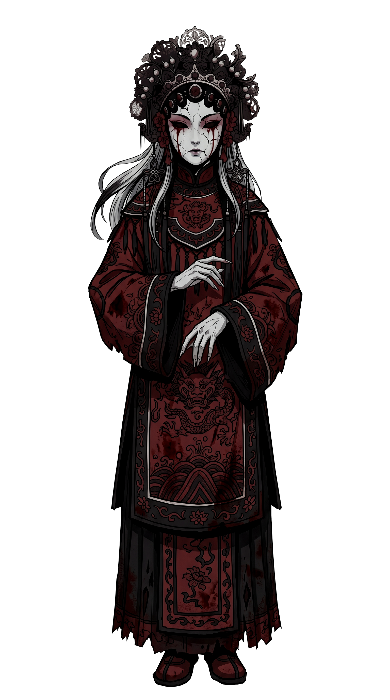
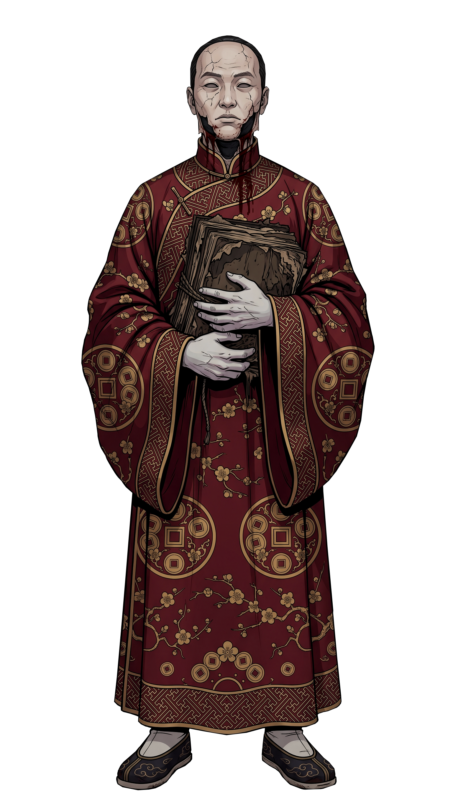

视觉基准
极深黑
暗场、墨雾
暗场、墨雾
深棕黑
半透明底
半透明底
旧纸白
正文文字
正文文字
暗红
危险、重点
危险、重点
暗铜金
可点、选中
可点、选中
冷灰蓝
阴冷信息
阴冷信息
墨灰
未解锁
未解锁
总原则：不要现代矩形面板。按钮像文字、旧戏票、纸签、墨迹；弹窗像暗场中浮出的字；线索像桌上散落的旧纸和照片；观皮像站在黑雾中的画像前。
Demo UI 优先级
- 对话界面：话题菜单、证据出示、破绽状态。
- 证据条背包：横向旧纸条，推理和观皮共用。
- 五心判定：错误扣心、危险、失败。
- 观皮界面：黑雾画像、证据槽、揭示反馈。
- 探索 HUD：地点、目标、热点、入口。
- 人物档案简版：嫌疑变化、身份遮罩。
- Toast：获得线索、目标更新、档案更新。
- 主菜单完整插画和标题字效。
- 暂停 / 设置。
- 完整人物关系档案。
一、主菜单
画皮
薛家戏班 · 民国二十年
交付：主菜单背景 1920×1080、标题字效果、4 个菜单文字状态、底部小字。背景需像完整插画，不要“背景图加按钮”的感觉。
状态需求
- 默认：暗金文字，低亮度。
- Hover：文字转暗红，底部有淡墨扩散。
- 选中：文字略亮，轻微扭曲或墨迹渗开。
- 禁用：墨灰，透明度降低。
美术注意
- 标题可用恐怖戏曲感字体或手写字形。
- 画面中心留足文字安全区。
- 底部黑雾要托住菜单可读性。
二、探索 HUD
排练室
寻找遗落的戏票和口供
寻找遗落的戏票和口供
线索
暂停
可调查
关键线索
调查陈列柜附近的异常，并试着与旦角交谈。
交付：地点字样、目标提示条、热点三态、角落入口。HUD 要轻，不能挡住场景美术。
需要画的组件
- 普通调查点：淡暗金虚线或墨迹圈。
- 已调查点：墨灰、低透明。
- 关键调查点：暗红细线、轻微脉冲。
- 线索/档案入口：旧戏票小角标。
- 目标提示：旧纸条或暗场渐变字幕。
三、对话界面

平静
警戒
破绽
交付：对话暗场渐变、人物名牌、话题菜单、证据出示入口、状态标签、继续提示。用于弹丸论破式调查段。
话题状态
- 普通话题：旧纸色或暗金文字。
- 已问过：墨灰、低透明。
- 新解锁：暗红边缘或印章标记。
- 不可用：墨雾遮挡。
- 证据出示：点击后弹出横向证据条背包。
对话状态
- 平静：普通对白。
- 警戒：问到旧案、后门、监控。
- 破绽：出示正确证据后角色说出关键情报。
- 封口：拒绝继续回答，但留下新调查目标。
四、线索面板
旧戏票
道具陈列室
道具陈列室
脸谱盒
旦角相关
旦角相关
未解锁
旧戏箱里的旧戏票
来源：道具陈列室
一张从旧戏箱夹层里找到的旧戏票，票根边缘有轻微烧痕。
关联：旦角
旧戏箱里的旧戏票
沾灰的脸谱盒
演出流程表
阿喜的口供
交付：横向证据条、五心血量、线索卡 5 类、详情纸页、筛选标签、关闭符号。证据条用于推理判定，错误一次扣一颗心。
证据条状态
- 默认：旧纸色横条。
- Hover：暗铜金描边。
- 选中：暗红墨迹高亮。
- 新获得：纸角亮起或盖章。
- 关键证据：暗红印章。
- 可用于当前判定：纸角有红线标记。
- 错误使用：短暂变黑，被墨吞回。
- 正确使用：留下红线标记。
五心状态
- 5/5 到 0/5 都要有状态。
- 心可以是暗红纸符、脸谱碎片或血墨点。
- 1/5 时画面边缘轻微压暗。
- 0/5 进入“调查失败，被请离后台”。
五、人物档案

薛万山
身份：现代薛氏剧团班主。
可疑点：批准取出民国旧案相关道具。
关系：压制沈青衣，管理周岱，警告玩家。
隐藏身份：未揭示
交付：沈青衣、阿喜、周岱、薛万山、没有脸的人预告档案。需要照片框、档案纸、嫌疑变化、隐藏身份遮罩、档案更新 Toast。
美术重点
- 像侦探笔记，不像资料面板。
- 已解锁信息可像手写补上。
- 隐藏身份用墨雾或刮花照片表现。
六、观皮界面
沈青衣
观皮目标：揭开第一张皮
选择 3 条证据，驱散画像墨雾。

旧戏票
脸谱盒
演出流程表
观皮
交付：中央画像、墨雾遮罩、3 个证据槽、观皮提交、正确/错误反馈、揭示高光。Demo 正确组合：旧戏票 + 脸谱盒 + 演出流程表。
反馈状态
- 选中线索：红墨线连接线索和画像。
- 正确：墨雾从局部散开，露出伤痕/真相。
- 错误：线索被墨吞回，纸张变暗，心 -1。
- 完全揭示：四周压暗，画像局部高亮。
- 心归零：调查失败，被请离后台。
七、暂停与弹窗
交付：暂停暗场、Slider、确认弹窗、新线索 Toast、目标更新提示。
弹窗方向
- 确认：全屏压暗，文字浮现，不要传统白框。
- 新线索：旧纸条从底部滑入。
- 目标更新：一行墨字出现后淡出。
- 错误提示：暗红墨迹一闪，不打断玩家。